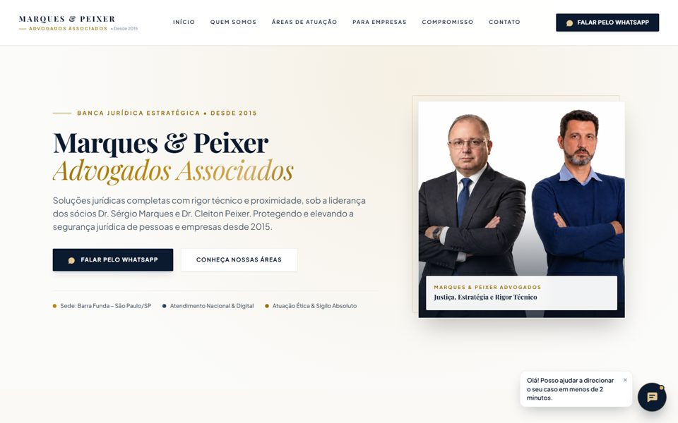
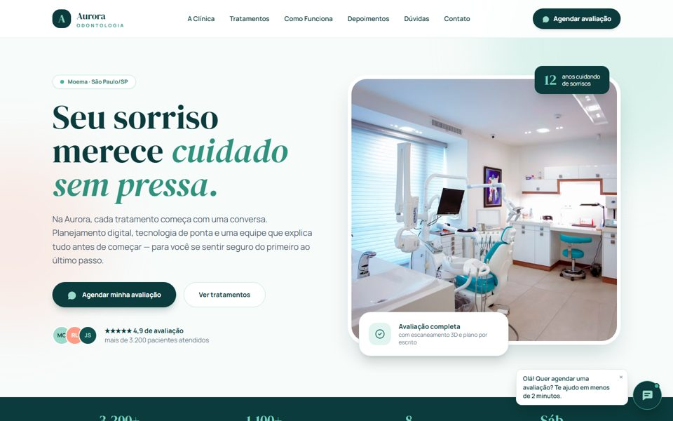
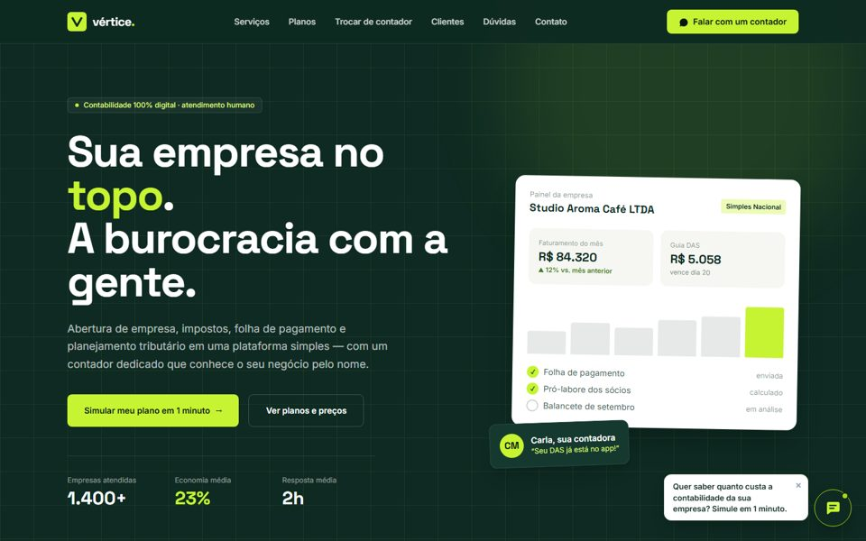
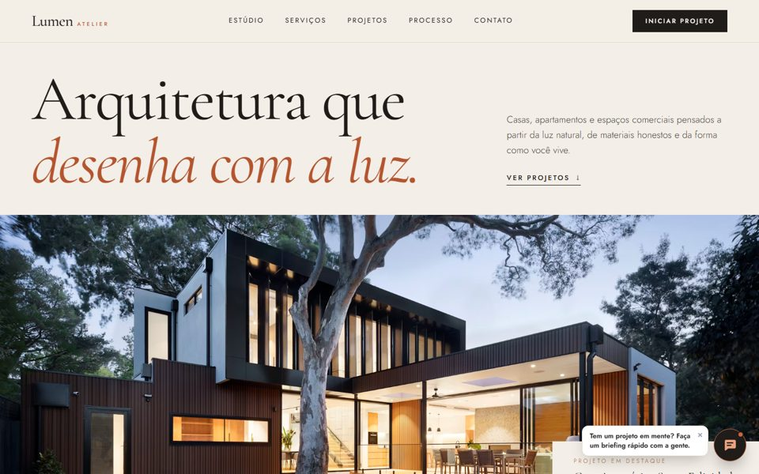
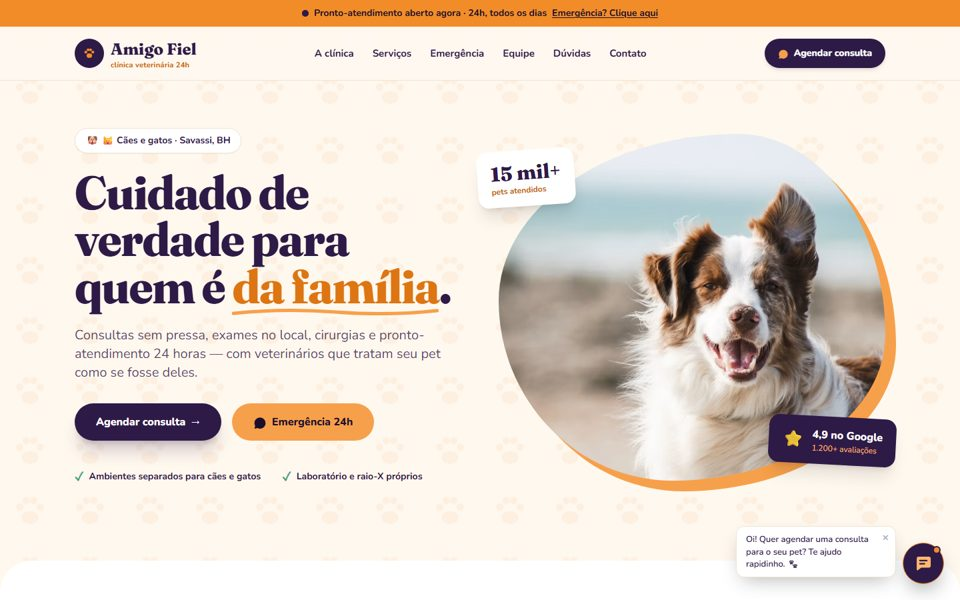
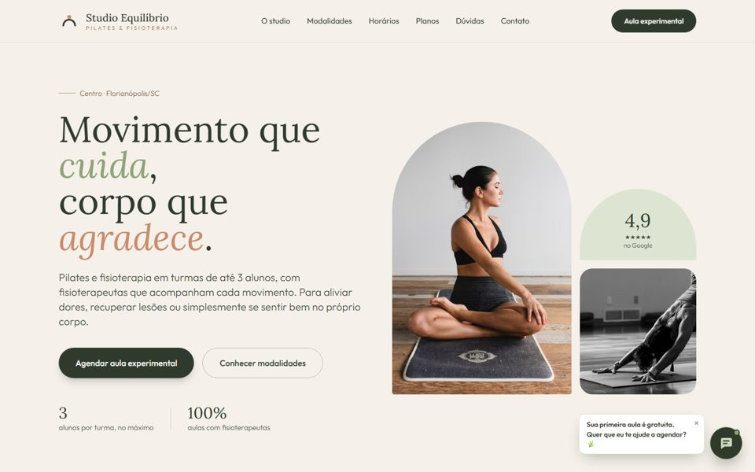

Advocacia · São Paulo/SP No ar
Marques & Peixer
Escritório de advocacia com triagem jurídica automatizada e sinalização de casos urgentes.
Ver site →
Odontologia · conceito
Aurora Odontologia
Clínica odontológica com pré-agendamento guiado e fluxo de urgência para dor.
Ver site →
Contabilidade · conceito
Vértice Contabilidade
Contabilidade digital com tabela de planos e simulador que qualifica o lead antes do contato.
Ver site →
Arquitetura · conceito
Atelier Lumen
Estúdio de arquitetura com layout editorial, galeria de projetos e briefing guiado.
Ver site →
Veterinária · conceito
Amigo Fiel
Clínica veterinária 24h com faixa de emergência e assistente que identifica casos graves.
Ver site →
Pilates & Fisioterapia · conceito
Studio Equilíbrio
Studio de pilates com grade de horários, planos por frequência e agendamento de aula experimental.
Ver site →